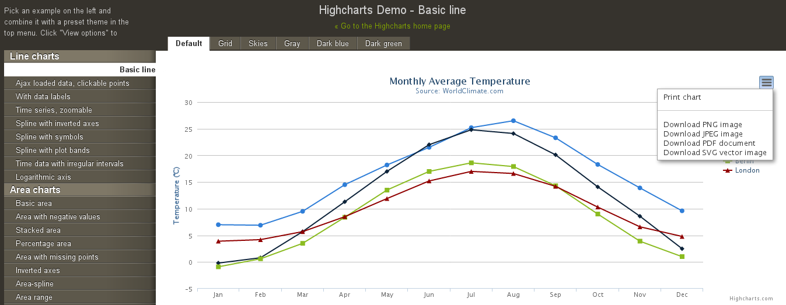

弄清问题，再求解决
今天同事问我：是否有什么python库或工具能够将网页内容转换成图片格式的。他在做这方面的事情，还没有好的方法，因为觉得我对python比较熟悉，所以问一下。
但是我从一开始我就犯错误了。其实我至少应该问一下：为什么要解决这个问题？也就是业务需求是什么？并且稍微一想这个问题其实比较含糊。现在的web页面可以很简单，也可能很复杂。那么这个问题里的“网页”是什么样的网页呢？是任何可能的网页么？目的是需要通过图片来展示网页的哪个部分的信息还是整个网页？这些问题我都没问，也没仔细考虑。
在没有明确需求的情况下，我就认为是将任何形式的网页完整地转换成图片，但又没弄清如果是这种情况问题的难度有多大。
在听完问题后，我就想到可能有两种方法：1. 先将网页转换成pdf，然后转换成图片，因为我对于将网页转换成pdf格式的方法有点印象；2.可能存在python实现的工具直接将网页转换成图片格式。你是否发现我的思路有个误区：问题的解决方案需要python代码实现，我假设了需要将这个功能嵌入到一个大的程序中。
然后我就开始蒙头google找方案。经过一番“艰苦卓绝”的查找，发现：1.确实有如xhtml2pdf等工具能将网页转换成pdf格式，但貌似对于中文的支持不是很好；2.没有好的python库或工具能够直接将网页转换成图片格式，有的方案要收费，有的方案需要调用第三方API，而公司的数据明显是不能让第三方获得的。
在查找解决方案的过程中，我也逐步意识到上述的那些问题，特别是若假设需要将任何形式的网页转换成图片格式，这个难度非常大，为什么呢？因为现在很多网页的部分内容都是由JS生成的，若你的程序只是简单地从服务器获取网页，该网页含有的JS代码并不会执行，将该网页转换成图片格式，图片所包含的信息与浏览器中展示的并不相同。所以你的程序起码需要包含一个JS解释器。OK，难度一下子就上去了。在我逐步了解其中的难度后，我开始尝试换个角度来考虑问题，反思同事所要解决的业务需求是什么。
在与他的进一步沟通之后，我才知道：一些总结汇报邮件中需要添加数据统计图，而原有的数据统计图在Web监控页面中，由Raphaeljs库绘制成SVG矢量图。由于无法期望邮件的接收者是从网页版邮箱阅读邮件（他们很可能使用各种邮件客户端如Outlook查看邮件），所以发送带有JS的HTML格式的邮件是没用的。
在了解业务需求后，我们就明白了其实问题本质上不是要将网页转换成图片，而是要获得图片格式的数据可视化结果。
那么问题就简单多了，可能从以下三个角度寻找解决方案：
- 将网页完整地转换成图片格式
- 将网页中的SVG内容转换成图片格式
- 使用本地的数据可视化工具将统计数据源，即Raphaeljs绘制SVG矢量图的JSON数据源绘制成图片
这三种方案中第二种最佳，为什么呢？因为第一种需要做一些额外的转换工作，自己实现的难度较大，第三种方案与Web监控页面所使用的是不同的数据可视化工具，所以产生的结果一般是不相同的，除非Raphaeljs支持图片格式的输出，那么应该就可以使用nodejs来实现。
经过网络查找，发现第一种方案与第二种方案都有现成的工具。
第一种方案：phantomjs可以完成，phantomjs包含了webkit，所以解释JS什么的就不再是个问题了，它有个Screen Capture的功能模块支持将网页完整地转换成图片格式，但由于要做很多额外的工作，所以效率比较低。
第二种方案是从Highcharts的Demo中挖掘出来的，如图所示：
Demo中可以输出多种图片格式，通过chrome浏览器的开发者工具可以发现其实现是向服务器export.highcharts.com发送一个请求，请求中包含网页中生成的SVG矢量图数据、目标图片格式等信息，服务器对该请求进行处理后返回目标格式图片。那么服务器端是如何将SVG转换成图片格式的呢？在Highcharts的文档中有个名为Export module的部分，其中说明了实现原理以及如何搭建这样的一个格式转换服务器。从文档可以看出这个实现方法的核心是借助了batik-rasterizer.jar这个Java工具包，它能将SVG转换成图片或PDF格式。
从上述该问题解决方案的寻找过程可以看出，很多时候并不是问题有多复杂或有多难，而是我们根本没有明确业务需求，没有搞清楚真正需要解决的问题，而对模糊的问题描述自以为是地作出一些假设，然后蒙头去解决错误的问题，从而浪费了很多时间。